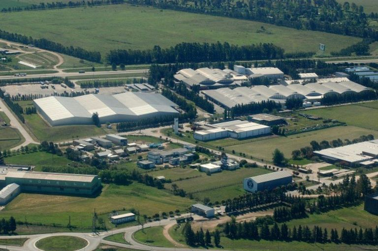
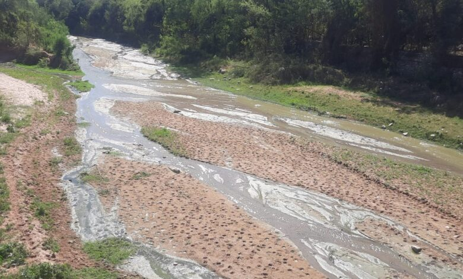
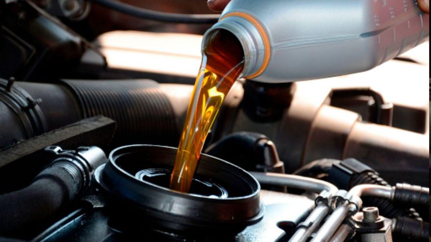

Mapa
Info y Consejos
Noticias
Sobre Nosotros
Noticias recientes
Contaminación

Allanaron el Parque Industrial de Gualeguaychú: investigan el funcionamiento de la planta de efluentes
Leer
Actualizado hace una hora

Domínguez adelantó que insistirá en acciones contra la contaminación en Salvador Mazza
Leer
Last updated 3 mins ago
Reciclaje

Córdoba recicla en dos años un 20% más de aceites industriales usados
Leer
Last updated 3 mins ago
Reciclaje libertario: Gabriel Bornoroni acude a fragmentos de JxC Córdoba
Leer
Last updated 3 mins ago